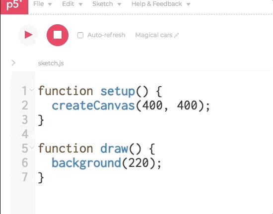

Did you know that p5 has been hiding things from you? When we type into the editor, we have so far just been typing into a Javascript file - but Javascript works alongside HTML and CSS to create websites. This HTML and CSS has been there the whole time, hidden by the p5 Editor. If we click the little arrow on the side, we will expand to be able to see our hidden files - and have a space to upload our own files. While we can look through the HTML and CSS if we want (and those of us with some web dev skills might want to start making fully realize sites!) we are going to mostly ignore them for now.

To upload an image, we first need to find an image. The easiest place to do this is to go to Google images and search, but we could pull images from most websites we go on - we can even take screenshots and use those! If you are unsure whether the images are allowed to be used in your project, please select the following filters when searching on Google Images: Click on Tools -> Usage rights -> labeled for reuse. When you want to save an image, right click (or control-click) and select 'Save Image As…' Keep track of the folder where you're saving your images! Most operating systems will save them to a folder called "Downloads".
Make sure when you save your image you give it an easy to remember name without any spaces. Because of how computers process spaces, they hate file names that start with capitals and that include spaces, and that will throw a lot of errors our way.
Once we've saved our file to a computer, we should see it saved somewhere on our computer. It will usually say something like 'filename.jpeg' The .jpeg is called a file extension or file type - it tells the computer what type of data it will be reading. Different file types do slightly different things, but for our purposes, we just need to make sure we are looking for image files, which may have types such as:
- .jpeg
- .jpg
- .png
- .tiff
- .bmp
Ideally, for this project, we would work with JPEG and PNG files as they're typically small in size and won't take much memory. While we can also use .gif files, we will notice that they do not play their animation in p5. There is a workaround for this, but for now, we will focus on static images. To upload an image, click the downward arrow next to program-file, select 'add file', and drag/drop or select the image you'd like to upload. Once you've done this, you can rename the image to an easy file name! Be sure to leave the file's extension.